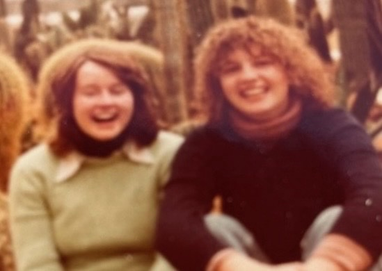
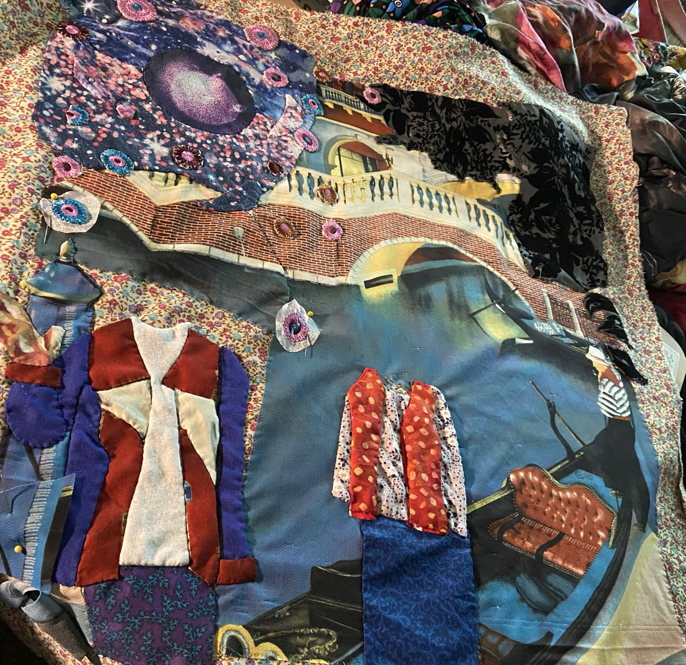
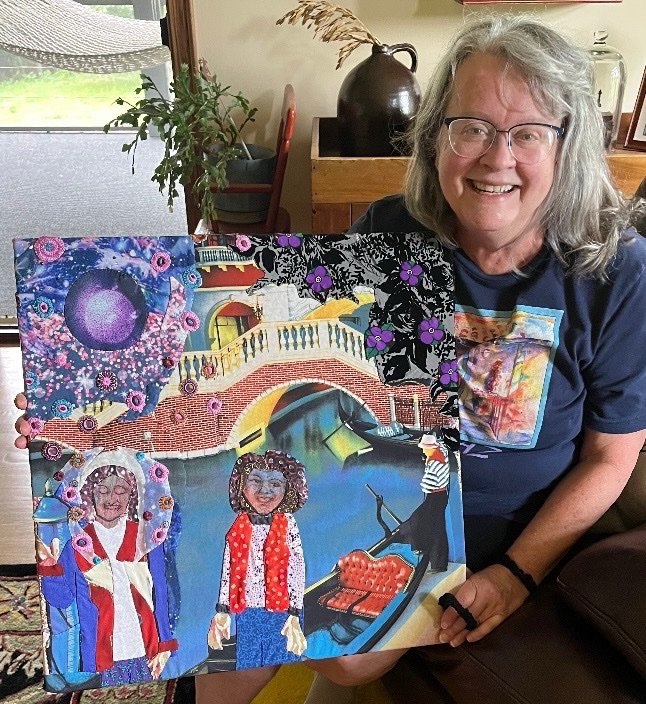
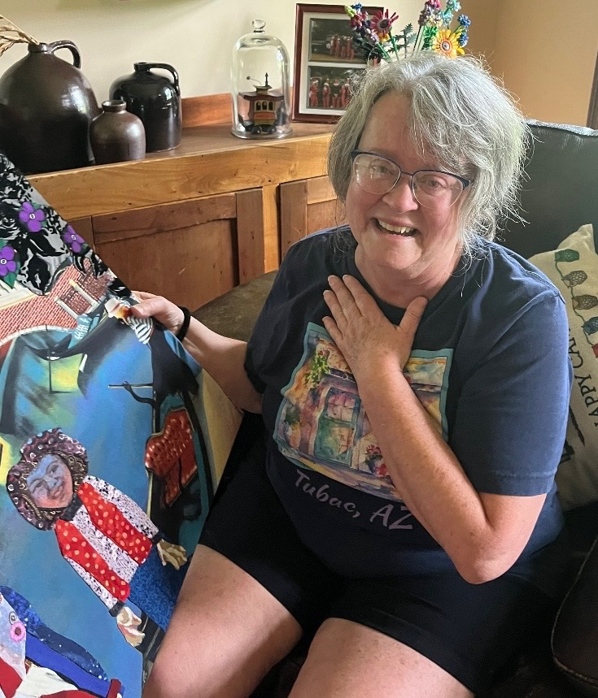

Brenda Folkert Collection
Wedding Portal
A portrait of friendship and a pre-wedding trip to Venice, translated into fabric.
The story
Venice, before the wedding.
Brenda was about to get married when she and Kelly traveled to Venice for a bachelorette party of sorts. Pictures from that trip helped inspire Wedding Portal and preserve the memory Karen was translating into fabric. Karen also worked to capture Kelly's unmistakable '70s perm in the piece, which proved especially difficult.
More photographs
The people and story around the piece.



